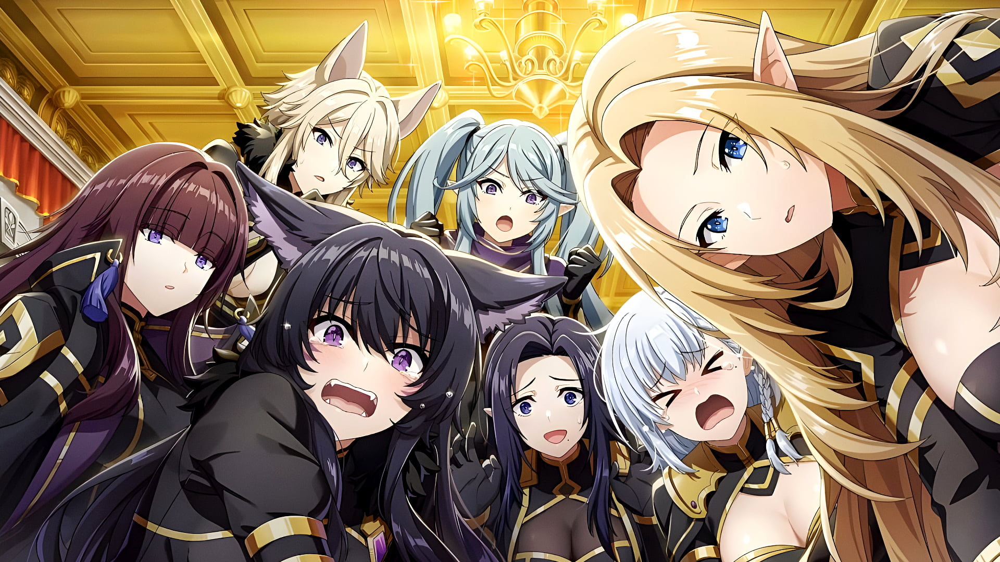

Introduction
Step into the Shadows... Welcome to The Eminence in Shadow! The Eminence in Shadow is a dark-fantasy action series that flips the isekai genre on its head. Created by Daisuke Aizawa, with manga art by Anri Sakano and an anime adaptation by Studio Nexus, the story follows Cid Kagenou—a boy obsessed with becoming the ultimate "shadow mastermind."
After dying in the real world and reincarnating into a magical fantasy realm, Cid gets the perfect chance to live out his delusions. He creates a secret organization, Shadow Garden, to fight a made-up cult — which turns out to be real.
While Cid thinks he's just roleplaying, he's actually waging a real war from the shadows. The manga and anime follow Cid’s double life — acting clueless by day and leading Shadow Garden by night.
Shadow Garden
Shadow Garden is the secret organization founded by Cid Kagenou (aka Shadow) in his quest to play the role of a hidden mastermind. What started as a joke turns out to be a real force fighting the evil Cult of Diablos.
Its members are incredibly powerful, loyal, and fully committed to the cause — even though they believe everything Cid “made up” is 100% true.
Key Members:
- Shadow – The enigmatic leader (Cid), who believes he's just "acting cool."
- Alpha – The first and most elite member, calm and intelligent.
- Beta – Loyal chronicler of Shadow’s legend, intelligent and dramatic.
- Gamma – Business genius behind Mitsugoshi Company.
- Delta – Wild and physically powerful fighter.
- Epsilon – Magic expert known for her vanity and posture.
- Zeta – Silent tracker skilled in wilderness survival.
- Eta – Brilliant but eccentric scientist and inventor.
Leader
Shadow (Cid Kagenou)
Cid Kagenou is a boy obsessed with one thing: becoming the ultimate “eminence in shadow”—a hidden mastermind who secretly controls everything while pretending to be a nobody.
After reincarnating into a fantasy world, he finally gets his chance. By day, he’s an average student. By night, he becomes Shadow — founder and leader of Shadow Garden.
Though he thinks it's all an act, he becomes a feared and legendary force in the world.
Original 7 Members
Alpha
The first and strongest member. Calm, graceful, and leads in Cid’s absence.
Beta
A writer under the pen name Natsume. Obsessed with recording Shadow's greatness.
Gamma
Physically weak but incredibly smart. Manages Shadow Garden’s finances and Mitsugoshi Company.
Delta
Brute strength. Instinct-driven, she loves to fight and is loyal to Shadow.
Epsilon
An elegant perfectionist. Known for her posture and beauty... though she struggles to keep up appearances.
Zeta
The scout. Works alone in faraway regions, known for stealth and animalistic instincts.
Eta
The inventor and scientist. Smart but lazy, always sleeping in her lab.
Made with ❤️ by Faijaan